Your household picks a plant or a pet. It lives at the top of Today and grows from what the house already does: chores ticked, the shopping bought, dinner decided, a leak fixed, a movie night that happened. In about two weeks it's fully grown: a short ceremony, a card in the album, Leaves for the shop, and the next one chosen together. Everything ships in one release.
Segment switches are done: on your iPhone 16e every switch is two or three frames at worst. Nestie is now one per house: the server side is live and the app reads and writes it, on development builds. Launch opens straight on Today. Nothing is released; stage hasn't moved.
A new session remembers nothing of this one. Paste this to start it:
Read Docs/Companion/HANDOFF.md first, then CLAUDE.md. Segment switching is done and measured on a phone (step 0 and step 1). Nestie is on the server and the app uses it (step 2); launch is optimistic (step 0b). Next: sign the simulator in and check Nestie on a real house, then measure launch and the remaining screens on a phone (step 1), then finish step 3, the vote (server live since 24 October, app built 24 October; try it on a real house of two). Use the specialist agents in .claude/agents. Build and typecheck only, no tests.
Both fixed. Two illustration directions were drawn side by side and you chose layered gouache. It's in the app for all six species, and Today now holds 60 frames a second with a grown, decorated tree, measured frame by frame.
The art →Tried and measured. A wind shader and a painted-grain finish ran on the GPU, and Today fell to about 25 frames a second: every frame waited for the two passes. The GPU still draws everything, but nothing custom runs per frame. The tree is drawn when it changes and the wind is a simple transform, so it's back to 60.
How it's drawn →Leaves for progress, never sold; Sparkles for purchases, with a few earned at every stage and graduation. Each thing has one price in one currency — no "100 Leaves or 5 Sparkles". A new house gets a celebrated welcome gift of both (🍃 150, ✨ 180), enough to buy something right away with a little left over.
The jar →Every label is one line now, in both languages. A label shrinks a little before it would wrap, and the action buttons line up whatever their icons.
In the app →Rewritten in Turkish, not off the English: casual, everyday, the "sen" form. "Eve hediye geldi!", "Seç bakalım", "Bugün bedava", "cıvıl cıvıl", "mışıl mışıl".
Names →Fixed, for everyone on 1.11. Today leaves out whatever the dock above the tab bar is showing: an open movie round, tonight's dinner, an event about to start.
On development builds, − / + under the tree takes points off or adds four at a time, and the card plays every stage change. The Lab's buttons do too, with the sheet half up.
Try it →Yes, and it's in the app already. A thirsty plant gets a splash in its soil, its leaves lift a little past where they rest and settle, its buds open and the fallen leaves go. A dozing one has its glass dome lifted off first. A sleepy duck flutters its eyes open, stretches, shakes, and its nightcap flies off. New stages pop with a ring of light.
The wake-up, frame by frame →Done. The name lives in one string, and nothing else in the code says it (inside, the feature is called "companion"). Renaming it, or the app, later is a one-line change in both languages.
Names →Yes, and nothing needs buying. Every tree, the duckling, 40 decorations, every mood and every movement are drawn in code. That costs nothing to license, adds nothing to the download, and can change in a day. Since version 6 the trees are a layered gouache illustration, still drawn in code.
How →One jar, your way. Whatever anyone buys goes into the house's jar (Kumbara), everyone spends from it, and the feed says who put in and who spent. It's simpler and it's what a real house does. It changes one earlier rule: nothing leaves with a person any more, because a shared jar has no "mine". I recommend that; it's in Still open for you to confirm.
The jar →49 days from 11 traditions: worldwide, Christian (Western and Orthodox), Muslim, Jewish, Hindu, Sikh, Buddhist, East Asian, Persian, Turkish and national days. Most are worked out with the calendars built into iOS. The rest come from India's official holiday list and Drik Panchang, checked one by one. Each house picks its own days, starting from suggestions for its country, and seasons flip south of the equator.
Every calendar →Build and run from Xcode and it's at the top of Today. It only shows on development builds, so TestFlight and App Store builds don't see it. Nothing is sent to the server yet. A Lab lets you grow it, make it thirsty and pretend it's Halloween.
What's in it →Fixed in version 4: six things change at once, from posture to the soil, plus a water-drop bubble.
The moods →It's in the live demo (switch to Duckling), in the menu bar, and on its own page.
The duck page →With the old rule, yes: bought pets joined "everything" and pushed the crown further away. Fixed. The finale now counts only what anyone can get without paying. Paid items sit on their own "Specials" shelf with a small moment of their own when a pack is fully grown.
The finale →Agreed, like a real home. A thing bought for one house belongs to that house. Two homes: buy it twice, or move it and the first home loses it. Leave a house and your purchases leave with you. The server enforces all of it.
Who owns what →The same seven stages: a duckling hatches from an egg, a kitten arrives in a little basket. Each stage it gets bigger and learns something new (first wobbly steps, playing, a trick). It reacts when someone does something, naps when the house is quiet, and steps into the album when grown.
See a duckling grow →Rive is an animation tool with a player that runs inside apps. A rig is the character's skeleton and controls, like strings on a puppet, so the app can make it blink, hop or sleep live. One four-legged rig can wear a kitten's or a puppy's drawing.
Who can make it →Partly. Any good illustrator can draw the plants, pets and decorations. Rigging and animating in Rive is a different skill: you need a 2D animator who uses Rive, or a studio with both. A one-week paid trial tells you for sure, and there's a fallback that needs only an illustrator.
The team →Drawn from nothing but code and seeded by the household's id, so no two households have the same tree. (This demo still draws the earlier tree. The app now draws the gouache one: see the art.) It sways, follows the real clock from sun to moon and fireflies, and shows how the house has been. Switch to the duckling to see a pet.
Companion How has the house been?The full prototype, with sliders for growth, clock, mood and wind: plant.html
Build and run from Xcode and Nestie is there, under the sentence. It's only in development builds while it's an MVP: TestFlight and App Store builds have the code but never show it. Nothing goes to the server. It grows from the chores your household finishes, which every phone already receives with who and when, and keeps everything else on the phone, one file per home.
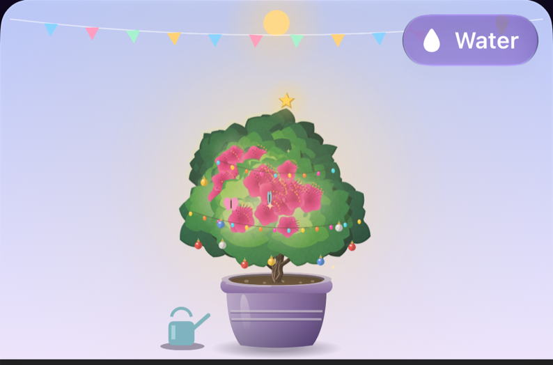
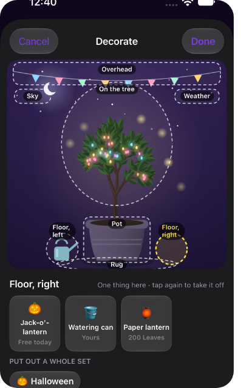
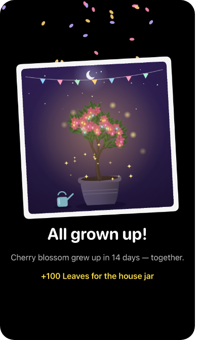
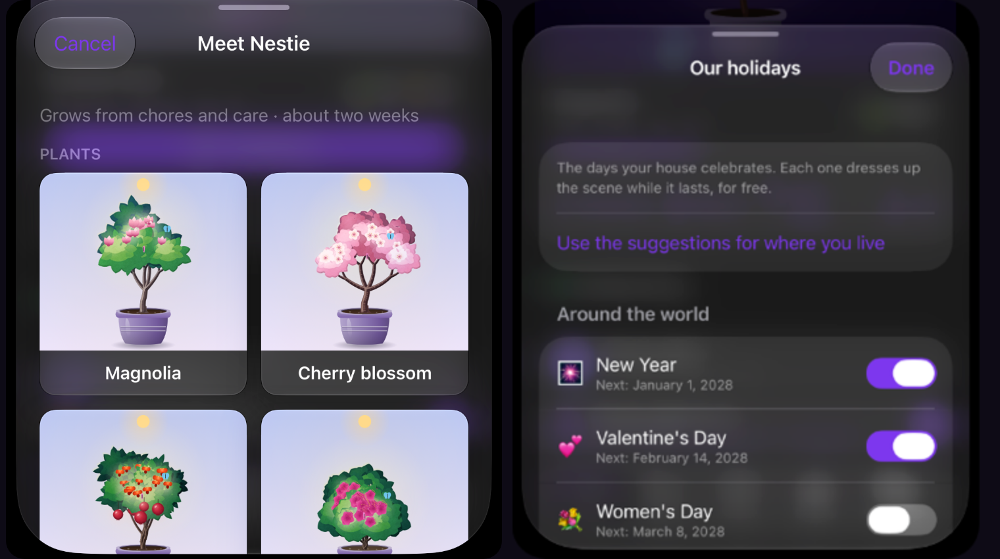
simctl launch … -companionDemo care (or decorate, celebrate, dress, album, holidays, pick, grow).-frameMeter 1 logs every late frame; -todayScroll 1 scrolls Today on its own.v8's shop was a solid plum room with drawn coins and lipped buttons, and you said it looked like it came out of a game. Now it's an ordinary NestZone screen that happens to sell things, and the pressed-in feel you liked stays on the one button that spends. These are from the simulator at night, so the windows are at dusk; by day they're lit.
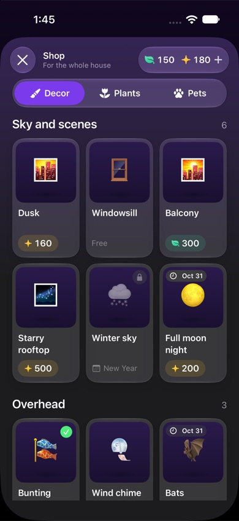
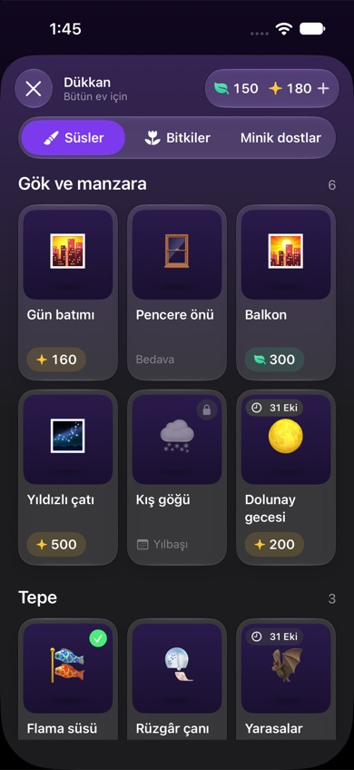
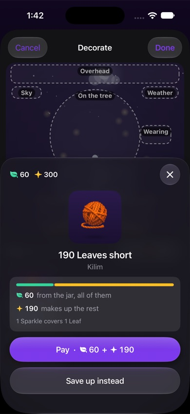
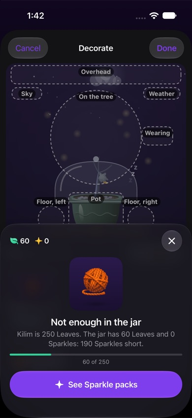
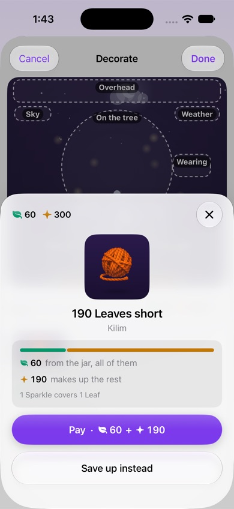
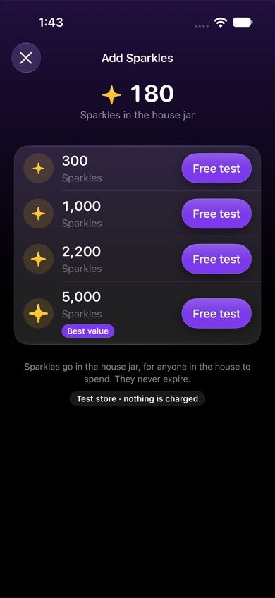
leaf.fill and sparkle, coloured on the glyph only (Amount)..depth); everything else is the app's usual buttons.ShopStage).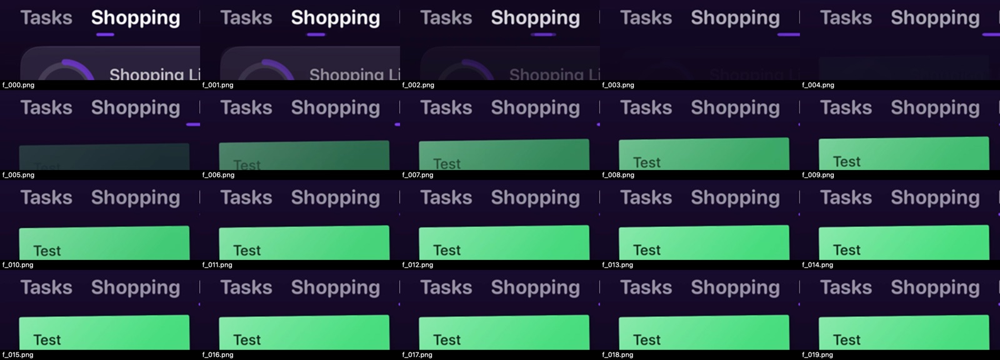
The v8 prototype, and how each of its six decisions was answered: shop.html.
SumOne's EggMon grows when both partners answer the daily question; people love the shared ritual, and lose interest once it's fully grown with nothing after it. Fifteen products were studied: what they reward, what they punish, how they end, what they sell, and what reviews say.
| Product | Grows from | Neglect | Together | The end | Sells | What people say |
|---|---|---|---|---|---|---|
| SumOne (4.9★, 7.5M+) | Both answer the daily question | A sad tear; you wait for your partner | One shared egg, memos, monthly recap | Adult at ~100 days, then nothing new | Gems $1.99–11.99, sub $5.99/mo, décor | Loved as a ritual · "3 pebbles a day isn't enough" |
| Widgetable (4.9★) | Feeding and bathing a co-parented pet | Hunger returns | Care at the same time | Not found | Eggs $1.99, food $0.99, sub | "Feels like a chore", food behind ads |
| Finch (4.9★, 765K) | Your own self-care goals | None, it never dies | Small gifts to friends | Micropets, wardrobe | Plus $9.99/mo or $69.99/yr | "Don't get made to feel bad" · friends drift away |
| Forest (60M) | Focus sessions grow trees | Leave the app and it withers | Plant Together: one quits, all fall | The forest is your timeline | Plus subscription | "Can't let my trees die" · "one missed day ruins it" |
| Pikmin Bloom | Steps | None | Party Walk, combined steps | Weekly recap with a photo | Coins | $100M lifetime |
| Tamagotchi | Quality of care shapes the adult | Death | Marriage, docking | Next generation | Device + tickets | Uni criticised for losing family lines |
| Neko Atsume | Put food out; cats visit | None; gifts left while away | None | Photo album of 86 cats | Fish (IAP) | Design award · NA2 items wear out |
| Sweepy / OurHome | Points for chores | OurHome takes points away | Leaderboard | None | Sub $3.99/mo | "Nagging someone else or parenting your partner" |
| Duolingo | A lesson a day | Streak loss (freezes help) | Friend streaks, lost if either misses | Milestones | Gems, Super | Streak animation alone +1.7% retention |
A new Today section, Automatic like the others. On a quiet day the full scene sits under the sentence. When something needs someone, it shrinks to a one-line strip so the urgent card stays on top. Set to Off, it lives under House → At a glance, so nothing is lost.
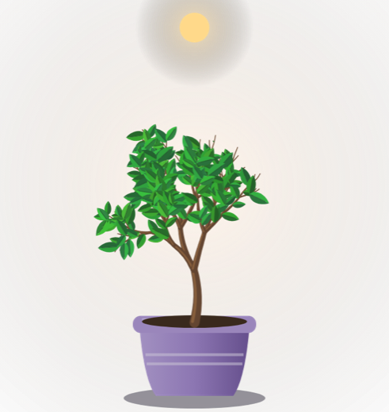
ManolyaSapling · about 5 days to bloom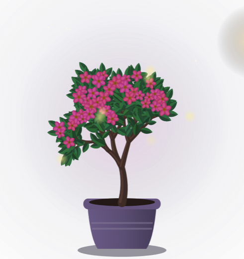
Nothing new to remember: growth comes from the actions people already take in the app, counted on the server so phones on older versions feed it too. Daily caps and a soft curve make the first things done each day count most, so faking chores buys nothing at all.
| Counts | Worth | Daily limit | Guard against farming |
|---|---|---|---|
| A chore done | 1 · upkeep 1.5 | soft | Once per chore, ever. Halved if its creator ticks it within 10 minutes. A person's 5th chore of the day counts half, and so on. |
| A shopping trip | 1.5 + 0.25 an item | 2 trips | Items bought within an hour are one trip. Items the buyer added minutes earlier don't count. |
| Dinner decided | 2 | 1 | Once per date, for today or tomorrow only. |
| An event that happened | 3 social · 1 admin | 2 | Credited after it ends. Made at least an hour before it starts. A repeating event counts once a week. |
| A problem fixed | 2–6 by severity | 2 | Once per problem. Reported and fixed by the same person within an hour counts 1. |
| A movie night | 3 | 1 | A round with at least two voters. |
| Daily care (water, pet, feed) | 0.8 first · 0.4 more · +0.5 together | 2 | One counted care per person per day; tapping more just gets a reaction. |
| Never | Messages, notes, recipes, expenses, settling debts, and money. Nothing in the shop makes it grow faster. | ||
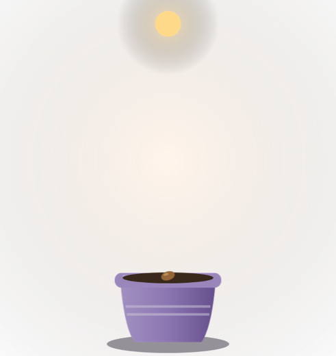
Seedday 0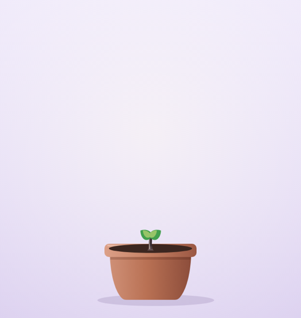
Sproutday 1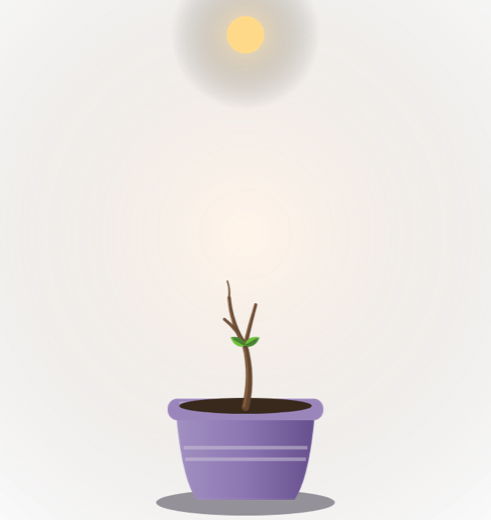
Seedlingday 3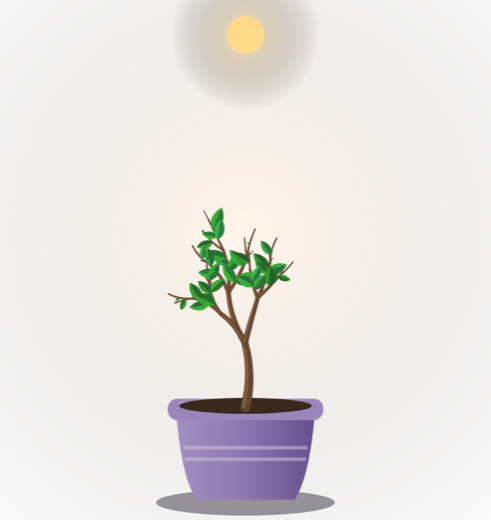
Leafyday 5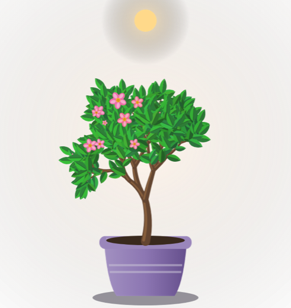
Budday 11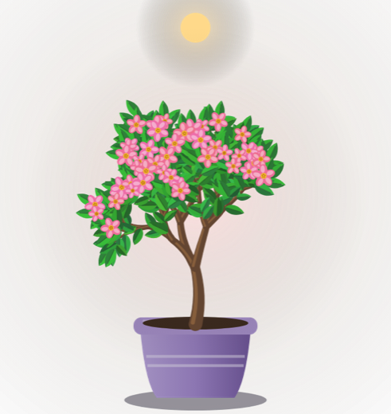
In bloomday 14Median day an active couple reaches each stage, so something visibly changes every two or three days. A pet follows the same seven steps: egg, wobbly egg, hatchling, baby, little one, young, grown.
Days to graduate, re-simulated at the new pace with realistic weekly activity, weekend peaks and random busy weeks. The line runs from the 10th to the 90th percentile; the dot is the median. A quiet couple takes about a month, which still feels alive.
| Household | People | p10 | Median | p90 | Share from care |
|---|
Mood used to be a shade of green, and that's not enough at the size of a card. Now each mood changes six things at once, so it reads in a glance. Progress still only goes up and it never dies: quiet days make it thirsty, not sick, and one care from anyone brings it back in about a second and a half, with a stretch. Holiday mode lets anyone send it to stay "with the neighbours" for up to 30 days.
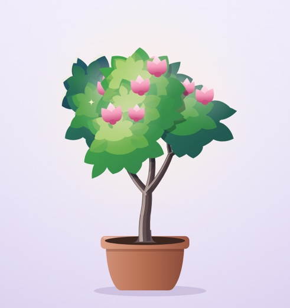
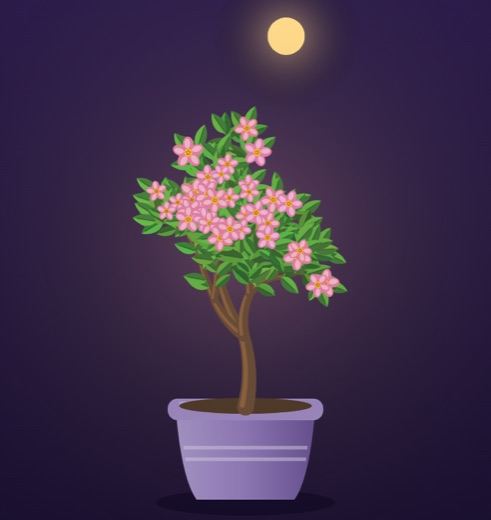
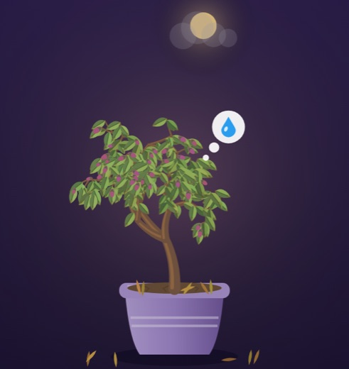
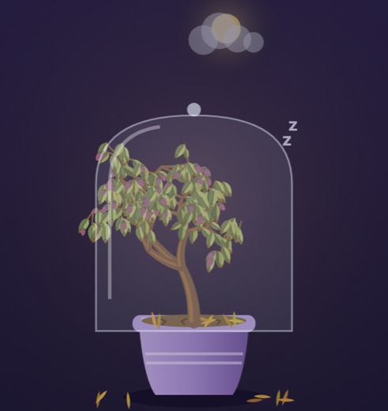
| What changes | Bright | Content | Thirsty | Dozing |
|---|---|---|---|---|
| Branches | Lifted, reaching up | Relaxed | Hanging out and down | Slumped, leaning |
| Leaves | Deep, glossy green | Green | Olive to straw, pointing at the floor, brown tips | Pale straw, about half fallen |
| Flowers | Wide open, petals drifting | Open | Closing to buds | Buds only |
| Soil and floor | Dark, moist | Dark | Dry, cracked, fallen leaves | Dry, cracked, more leaves |
| Light | Warm halo, glints; butterflies by day | As the clock says | A cloud over the sun, a dimmer card | Grey, under a glass dome |
| Asks for | Nothing | Nothing | A water-drop bubble | Nothing; it waits |
| A pet | Bouncy, sparkly eyes | Blinks and bobs | Faded, head and wing droop, naps | Nightcap, slow breathing |
Bright, content, sleepy, dozing. The face, the colour and the posture all change, and so does how it moves (see the duck page).
Every change of state gets its own short transition, so the companion never just switches from one picture to another. After quiet days, one chore or one care wakes it all the way, not a notch, because coming back should feel like a welcome. These frames are from the app.
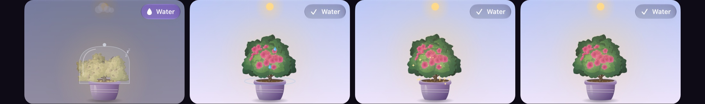
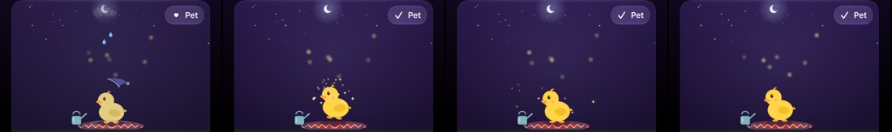
| Change | Plant | Pet |
|---|---|---|
| Thirsty → awake | Splash ring, sparkle burst, leaves spring up with a small overshoot, buds open, fallen leaves fade | Eyes flutter open, a stretch, a shake, the colour comes back |
| Dozing → awake | The glass dome lifts off and fades, then the same | The nightcap flies off, then the same |
| A chore lands | A drop arcs in from the corner, a squash and stretch from the soil, sparkles | A hop that catches the sparkle |
| Care | Water from above | Hearts rise off it |
| A new stage | A ring of light opens around it, a pop, and +10 Leaves rise out of the jar | |
| Ready to graduate | A slow golden breath around it until somebody taps Celebrate | |
With Reduce Motion on, every change still happens, as a short cross-fade with nothing flying. Try it in the live demo: pick "A week away", then "Someone ticks a chore".
Each graduate becomes a card: its portrait (redrawn from its seed, so nothing is stored but numbers), the dates, the days it took and three moments from its life. Graduation pays 100 Leaves into the household's wallet and leaves a keepsake for the scene.
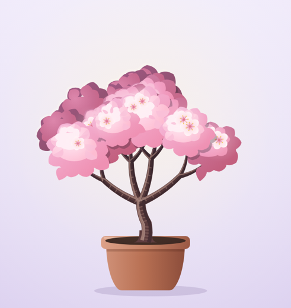
Kiraz çiçeğiCherry blossom · 12 days · Apr 2026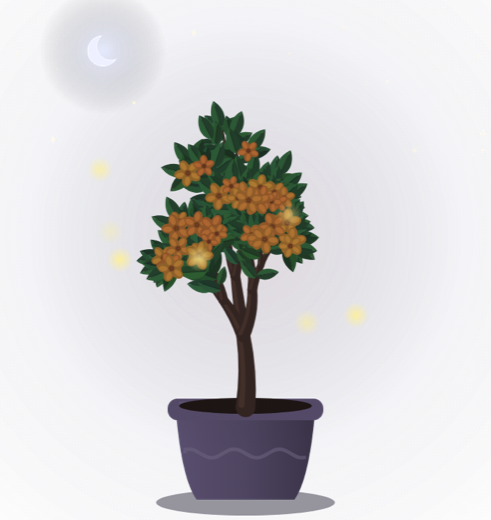
Nar ağacıPomegranate · 16 days · Mar 2026generic poll. A new poll type would show up as a movie round on every older version.Pets follow the same seven stages and the same growth as plants. Birds and turtles start as an egg; kittens, puppies and bunnies arrive in a little basket. Each stage the pet gets bigger and picks up something new, so there's always a reason to look. This duckling is drawn in code from five parts, and it's the one in the app now; more pets will be built the same way. It also has its own page.
| Stage | Duckling | Kitten | New at this stage |
|---|---|---|---|
| 1 · Arrival | An egg | A basket with a blanket | It's there. Care is a gentle tap. |
| 2 · Stirring | The egg wobbles | Ears peek out | Reacts to chores with a wobble. |
| 3 · Hatchling | Head out of the shell | Tiny kitten in the basket | First look around; sleeps a lot. |
| 4 · Baby | Fluffy, wobbly steps | Wobbly steps | Follows whoever cared last. |
| 5 · Little one | Flaps its wings | Chases a toy | Plays when someone cares. |
| 6 · Young | Hops and catches sparkles | Pounces on sparkles | A trick of its own. |
| 7 · Grown | A proud duck | A grown cat | Full personality; ready for the album. |
Decorations don't go wherever you drop them. The scene has eight spots, each made for one kind of thing, and decorating is tapping a spot and choosing what goes there. Try it below: it's the real prototype in Decorate mode. Tap a glowing spot, then something in the tray.
| Spot | Holds | For example | For a pet |
|---|---|---|---|
| Overhead | 1 | Bunting, heart garland, bats | Same |
| Sky | 1 | Full moon night, winter sky, dusk, a balcony or rooftop view | Same |
| Weather | 1 | Snowfall, falling petals | Same |
| On the tree | up to 4 | Fairy lights, ornaments, a star, wish notes | Wearing: a hat, a scarf, a bow |
| Pot | 1 | Terracotta, blue glazed, golden | Bed: a basket, a cushion |
| Floor, left and right | 1 each | Jack-o'-lantern, gift box, paper lantern, watering can, Bayram candy bowl | Same |
| Rug | 1 | Kilim | Same |
draggable and dropDestination for drag, taps for everything else; a haptic on snap.companion_scene row per home, and companion:place writes one spot at a time, so two people decorating different spots never overwrite each other.Each house picks the days it celebrates, from 49 across 11 traditions, starting from suggestions for its country. While a day lasts, it dresses the scene for free and the card offers to put its things out with one tap. They go back in the box by themselves when it's over and come out again next year.
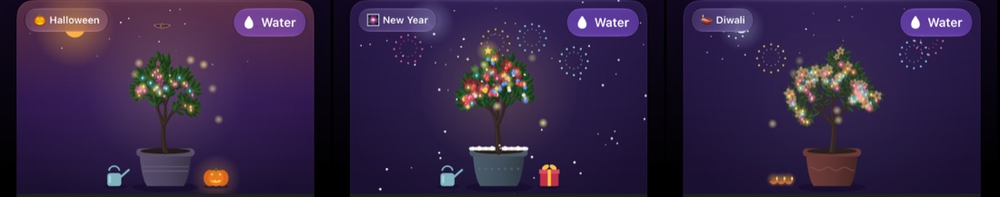
Docs/Companion/HOLIDAYS.md.An active household graduates about 26 companions a year, so the catalog starts at 39 and grows by two or three every month, with seasonal species that return each year. Every species also has three colour variants to grow again later. Some come free, some are earned with Leaves, some are bought.
Every house has a jar, like the one on the kitchen shelf. It holds Leaves, which only progress gives — growing, new stages, graduations — and are never sold, and Sparkles, which are what people buy, with a few earned along the way like a merge game's level-up. Everybody in the house spends from it. Every thing in the shop has one price in one currency: never "100 Leaves or 5 Sparkles" for the same thing, because a second way to pay for what progress already earns is paying to skip the progress. A house short of Leaves can make up the rest with its own Sparkles, one for one: the same price, paid partly in the other coin, never a cheaper one. Sparkles are never made up with Leaves. Nothing is bought without a last look at what it costs and what's left; not enough even so, and the question offers the Sparkles store, then comes back to the thing once there's enough.
What's in the jar and what it bought belong to the house, like furniture bought from a shared kitty. Two homes have two jars. Moving out, you leave the jar on the shelf.
| Situation | What happens |
|---|---|
| Ece adds Leaves to Home A's jar | They're Home A's. Anyone there can spend them; the feed says she added them. |
| Ece is also in Home B | B has its own jar. Leaves don't move between houses; she tops up whichever she likes. |
| Something is bought from A's jar | It's A's, whoever pressed the button. |
| Ece leaves Home A | The jar and everything bought stay with the house. A change from version 4, where purchases left with the buyer: a shared jar has no "mine" to take. |
| Album cards | Always stay. Memories belong to the house that made them. |
| A house is deleted | The delete warning says how many Leaves are in the jar, before anyone confirms. |
| Apple refunds a top-up | The jar goes down by that much, even below zero; the shop pauses until it's back. |
jar:topUp: verifies Apple's signed transaction once, and credits the jar of a house the buyer is a member of.shop:buy: you must be a member of the house; the jar is debited in the same write the item lands in the house.A busy house can grow everything available before the next monthly drop arrives. That moment deserves its own celebration, not an empty picker. When the server has nothing new, the house gets a finale and a way to keep going.
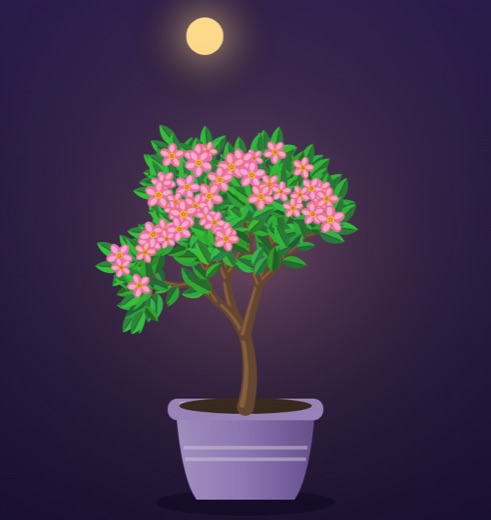
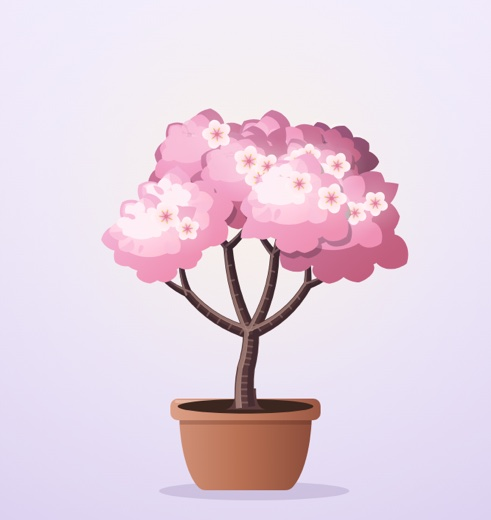
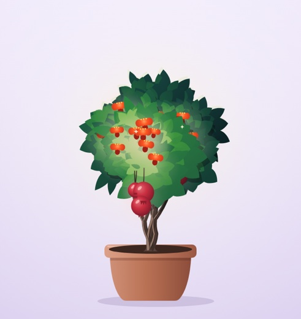
You're planning to put things like House problems, Money, the calendar, custom movie collections and custom recipes behind a subscription. The companion should stay free: it's the reason to open the app every day, and the best way to show people what a subscription adds.
Putting existing features behind a subscription deserves its own plan. One server serves every app version, and older versions don't know about subscriptions, so the locking has to be done carefully to avoid breaking screens people already use.
It should work in English and Turkish, be friendly enough to say out loud ("did you water the Nestie?"), and be ownable for the App Store page. A quick search found no companion app using these; a trademark check is still needed.
You asked me to be the illustrator, the animator and the motion designer, and to make the trees premium. Two directions were drawn in code and put side by side; you chose layered gouache: more detailed, more realistic, more painterly. Nothing is a picture. The trees grow from the household's id, the duckling is a handful of shapes, every decoration is a few dozen lines of drawing, and every movement is a formula. It costs nothing to license, adds nothing to the download, and can change in a day.
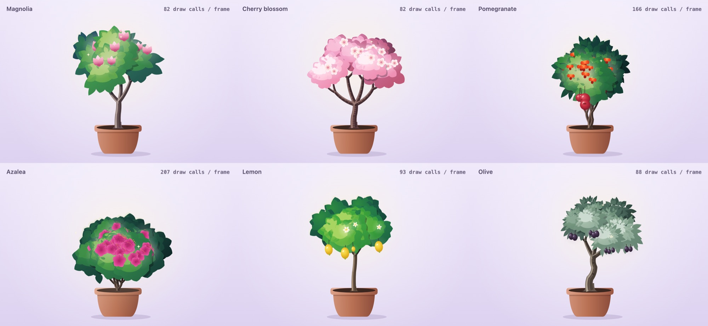
Leaf-shaped lobes are laid in clumps, like cut paper, on three depth tiers: cool and dark at the back, warm and lit in front, with the light always from the upper left. Each clump has a shadow shape, a lit copy with a sun gradient, a sunny patch and a few leaf cut-outs. The front clumps cast shadows on the ones behind and on the branches, a rim light picks out the back at night, and every flower has its own gradient and stamens.
Both directions side by side: compare.html. The gouache tree live, with sliders: tree.html.
| Piece | How it's made | Status |
|---|---|---|
| Trees (6 species, any number of seeds) | Layered gouache grown from a seed: branching, clumps on three tiers, flowers, fruit | In the app |
| Duckling | Five shapes moved by code: 7 stages, 4 moods, hop, wiggle, wake-up | In the app |
| Decorations | 40 drawings, with night glow, twinkle, sway and falling weather, hung where the canopy's clumps are | In the app |
| Moods and motion | Wind, droop, revive, stage pop, drops, hearts, a leaf falling, petals, fireworks | In the app |
| More pets (kitten, hedgehog, bunny…) | A few body plans (round, four-legged, bird, fish), each dressed per species | Next |
| More plants (sunflower, cactus, basil…) | New growth rules in the same gouache: a stalk and a head, pads, a rosette | Next |
art/shaders.Canvas and TimelineView, which ship with iOS. No custom shaders.plan/ and art/ are the same drawing in a browser, for trying ideas before they go into the app. The live demo above still uses the earlier tree; the gouache one is tree.html.The actions that grow it are ones every installed version already sends. Each gets a one-line hook that schedules a small "reconcile" job after the write, so the companion can never slow down or roll back a tick. Purchases are checked on the server too: the phone hands over Apple's signed receipt, the server verifies it and credits the house jar once.
companions home, species, variant, name,
status, points, stage, threshold
companion_growth source, key (unique), actor,
points, day, label
companion_album species, variant, dates, recap
companion_views who has seen which ceremony
house_jars one per home: Leaves
jar_ledger who added or spent, key (unique)
store_receipts Apple transaction id (unique)
owned_items what each house owns, from whom
companion_scene one per home: the eight spots
seasons events, dates, their items
Species live in code next to their art, with a release date so the server knows what's out. Decorations and seasons are data on the server, so a new seasonal item needs no app update. Everything joins the home's delete cascade.
companion:forHome: one live payload with stage, progress, mood clock, today's care, the last 8 growth events to animate, any ceremony or finale waiting.companion:care, companion:choose (direct pick for one), companion:markCeremonySeen, companion:album.shop:catalog, shop:buy (spends from the jar atomically), companion:place (one spot per call), seasons:current.jar:topUp verifies a StoreKit 2 signed transaction against Apple's certificate chain, records it once and credits the chosen house's jar; an HTTP endpoint takes App Store server notifications for refunds.reconcile, an hourly sweep (which also puts seasonal things away at an event's end and back on its first day), recount, and a monthly "new seeds" notice.With no art to wait for, the date is set by engineering alone. The steps below are estimates in working sessions, and each one can ship to testers on its own.
shop:buy on the server, the same checkout (make-up included) in one writejar:topUp), once per transaction; refunds from App Store notificationsCompanionFlag on, a feature changelog entry, the version bumped, backend first; TestFlight, App Review★ your calls · ✓ recommendations you accepted
RecommendedNothing: the jar and what it bought stay with the house, like a shared kitty.
Or: unspent Sparkles someone bought go with them (more bookkeeping, and the jar can suddenly shrink).
RecommendedFour packs of Sparkles, for example 300 / 1,000 / 2,200 / 5,000, priced from Apple's tiers, Turkish prices from local tiers; adjust after a month.
Or start with two packs only.
RecommendedEight spots with Decorate mode and preview before buying, as in the app.
Or free placement anywhere in the scene.
Decide at that stepThe app talks to one small store client either way, and the server verifies every top-up.
StoreKit 2 alone costs nothing and needs our own verification; RevenueCat does receipts, refunds and analytics for a share of revenue past its free tier.
BuiltOne Sparkle for one Leaf: easy to say and check, and saving is never the worse deal (earned, a Sparkle comes three times slower).
Or two Leaves per Sparkle, which makes topping up cheaper. One number in the code.
RecommendedThe warning names both balances, so nobody throws away Sparkles without seeing it.
Or nothing special: the jar goes with the house like everything else.
RecommendedA monthly 300 Sparkles into the jar and one exclusive seasonal thing, decided with the rest of the subscription.
Or nothing companion-specific.